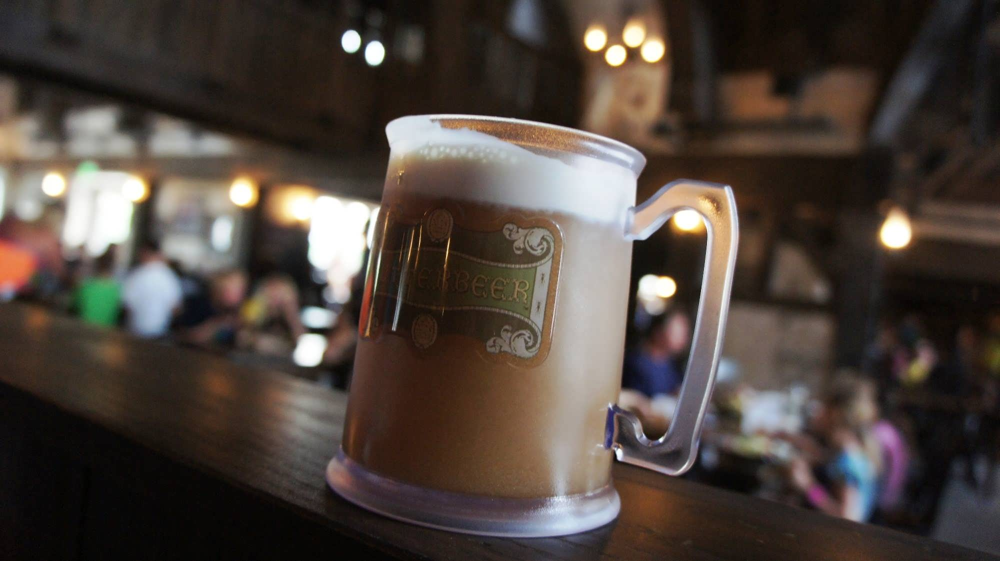
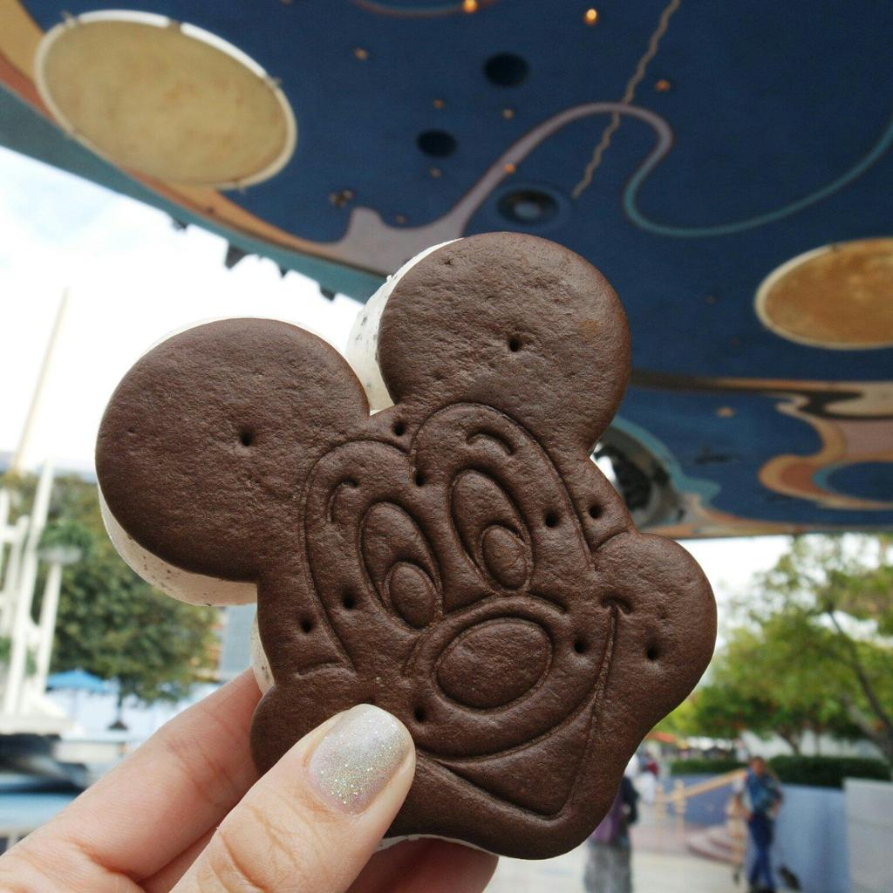
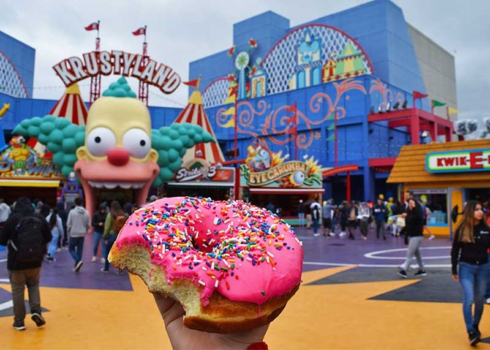

Orlando City
Gastronomia de Orlando:
Cerveja amanteigada
|  |
-
A butterbeer é citada nos livros e nos filmes de Harry Potter
como a bebida favoritaa bebida favorita do mundo bruxo. Apesar
do nome, trata-se de um drink da disney onde se encontra as
suas figuras não-alcoólico com sabor de baunilha.
|
Mickey’s Ice Cream Sandwich
|  |
-
O clássico sorvete com formato de um dos personagens mais
famososdo mundo é uma das guloseimas preferidas dos turistas.
O Mickey’s Premium Ice Cream Sandwich é nada menos do que um
sanduíche de sorvete e biscoito.
|
Donuts dos Simpsons
|  |
-
Quem já assistiu ao seriado “Os Simpsons” sabe que os donuts com
cobertura doce e confeitos são a maior paixão de muitos dos
personagens. No Universal Studios há uma área onde os fãs têm a
chance de fazer parte da história e provar os famosos donuts
cor-de-rosa da loja Lard Lad Donuts.
|